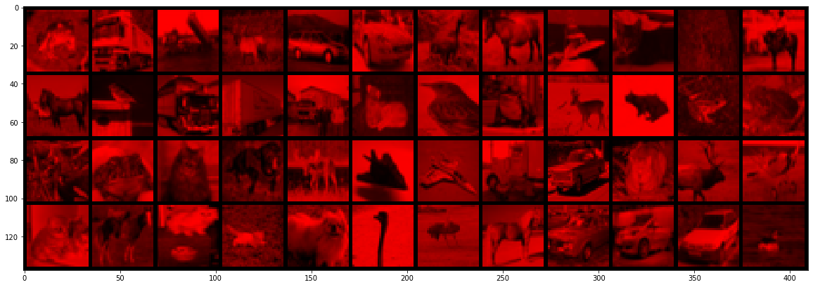

This website contains quizzes for the Deep Learning course. Modules on the left correspond to modules on this website.
You can uses quizzes to check your understanding of a module. Please follow theses rules:
1 - Take a quiz as soon as you get to it.
2- Do not skip a quiz.
Every quiz looks like the one below. Try it out by clicking "Start".
If you get a question incorrect, you will see the correct answer like above.
Now you are ready to start!

Module 2: PyTorch tensors and automatic differentiation
You can either do the quizzes corresponding to Module 2 with a static version of the notebook:
or just do all the quizzes
If you did not make any mistake, you can safely go to the end of Module 2b

Module 2: PyTorch tensors and automatic differentiation
import matplotlib.pyplot as plt
%matplotlib inline
import torch
import numpy as np
> torch.__version__
'1.12.1+cu113'
Tensors are used to encode the signal to process, but also the internal states and parameters of models.
Manipulating data through this constrained structure allows to use CPUs and GPUs at peak performance.
Construct a 3x5 matrix, uninitialized:
x = torch.empty(3,5)
print(x.dtype)
print(x)
torch.float32
tensor([[7.9394e-35, 0.0000e+00, 3.3631e-44, 0.0000e+00, nan],
[0.0000e+00, 1.1578e+27, 1.1362e+30, 7.1547e+22, 4.5828e+30],
[1.2121e+04, 7.1846e+22, 9.2198e-39, 7.0374e+22, 0.0000e+00]])
If you got an error this stackoverflow link might be useful...
x = torch.randn(3,5)
print(x)
tensor([[-0.0515, 0.6647, 0.5428, 2.5307, 0.9185],
[-0.2556, 0.5543, 1.6044, 0.8425, -1.0667],
[-0.5247, 0.2197, 0.8738, 0.8047, 0.7197]])
print(x.size())
torch.Size([3, 5])
torch.Size is in fact a tuple, so it supports the same operations.
x.size()[1]
5
x.size() == (3,5)
True
Bridge to numpy
y = x.numpy()
print(y)
[[-0.05147836 0.6646777 0.54277486 2.5307057 0.9185137 ]
[-0.25555766 0.55434686 1.6044122 0.8425406 -1.0667061 ]
[-0.52467006 0.21967238 0.87380797 0.8046722 0.7197009 ]]
a = np.ones(5)
b = torch.from_numpy(a)
print(a.dtype)
print(b)
float64
tensor([1., 1., 1., 1., 1.], dtype=torch.float64)
c = b.long()
print(c.dtype, c)
print(b.dtype, b)
torch.int64 tensor([1, 1, 1, 1, 1])
torch.float64 tensor([1., 1., 1., 1., 1.], dtype=torch.float64)
xr = torch.randn(3, 5)
print(xr.dtype, xr)
torch.float32 tensor([[ 0.4959, -0.8126, -0.7801, 0.9866, 0.5365],
[-0.9082, 0.1658, -1.2888, -2.4009, 0.5765],
[-0.4390, -0.6147, -1.3412, -0.0609, -1.0023]])
resb = xr + b
resb
tensor([[ 1.4959, 0.1874, 0.2199, 1.9866, 1.5365],
[ 0.0918, 1.1658, -0.2888, -1.4009, 1.5765],
[ 0.5610, 0.3853, -0.3412, 0.9391, -0.0023]], dtype=torch.float64)
resc = xr + c
resc
tensor([[ 1.4959, 0.1874, 0.2199, 1.9866, 1.5365],
[ 0.0918, 1.1658, -0.2888, -1.4009, 1.5765],
[ 0.5610, 0.3853, -0.3412, 0.9391, -0.0023]])
Be careful with types!
resb == resc
tensor([[False, True, True, False, True],
[ True, False, True, True, False],
[False, True, True, False, True]])
torch.set_printoptions(precision=10)
resb[0,1]
tensor(0.1874370575, dtype=torch.float64)
resc[0,1]
tensor(0.1874370575)
resc[0,1].dtype
torch.float32
xr[0,1]
tensor(-0.8125629425)
torch.set_printoptions(precision=4)
Broadcasting
Broadcasting automagically expands dimensions by replicating coefficients, when it is necessary to perform operations.
- If one of the tensors has fewer dimensions than the other, it is reshaped by adding as many dimensions of size 1 as necessary in the front; then
- for every mismatch, if one of the two tensor is of size one, it is expanded along this axis by replicating coefficients.
If there is a tensor size mismatch for one of the dimension and neither of them is one, the operation fails.
A = torch.tensor([[1.], [2.], [3.], [4.]])
print(A.size())
B = torch.tensor([[5., -5., 5., -5., 5.]])
print(B.size())
C = A + B
torch.Size([4, 1])
torch.Size([1, 5])
C
tensor([[ 6., -4., 6., -4., 6.],
[ 7., -3., 7., -3., 7.],
[ 8., -2., 8., -2., 8.],
[ 9., -1., 9., -1., 9.]])
In-place modification
x
tensor([[-0.0515, 0.6647, 0.5428, 2.5307, 0.9185],
[-0.2556, 0.5543, 1.6044, 0.8425, -1.0667],
[-0.5247, 0.2197, 0.8738, 0.8047, 0.7197]])
xr
tensor([[ 0.4959, -0.8126, -0.7801, 0.9866, 0.5365],
[-0.9082, 0.1658, -1.2888, -2.4009, 0.5765],
[-0.4390, -0.6147, -1.3412, -0.0609, -1.0023]])
print(x+xr)
tensor([[ 0.4444, -0.1479, -0.2373, 3.5173, 1.4550],
[-1.1637, 0.7201, 0.3156, -1.5584, -0.4903],
[-0.9636, -0.3950, -0.4674, 0.7438, -0.2826]])
x.add_(xr)
print(x)
tensor([[ 0.4444, -0.1479, -0.2373, 3.5173, 1.4550],
[-1.1637, 0.7201, 0.3156, -1.5584, -0.4903],
[-0.9636, -0.3950, -0.4674, 0.7438, -0.2826]])
Any operation that mutates a tensor in-place is post-fixed with an _
For example: x.fill_(y), x.t_(), will change x.
print(x.t())
tensor([[ 0.4444, -1.1637, -0.9636],
[-0.1479, 0.7201, -0.3950],
[-0.2373, 0.3156, -0.4674],
[ 3.5173, -1.5584, 0.7438],
[ 1.4550, -0.4903, -0.2826]])
x.t_()
print(x)
tensor([[ 0.4444, -1.1637, -0.9636],
[-0.1479, 0.7201, -0.3950],
[-0.2373, 0.3156, -0.4674],
[ 3.5173, -1.5584, 0.7438],
[ 1.4550, -0.4903, -0.2826]])
Shared memory
Also be careful, changing the torch tensor modify the numpy array and vice-versa...
This is explained in the PyTorch documentation here:
The returned tensor by torch.from_numpy and ndarray share the same memory. Modifications to the tensor will be reflected in the ndarray and vice versa.
a = np.ones(5)
b = torch.from_numpy(a)
print(b)
tensor([1., 1., 1., 1., 1.], dtype=torch.float64)
a[2] = 0
print(b)
tensor([1., 1., 0., 1., 1.], dtype=torch.float64)
b[3] = 5
print(a)
[1. 1. 0. 5. 1.]
Cuda
torch.cuda.is_available()
True
#device = torch.device('cpu')
device = torch.device('cuda') # Uncomment this to run on GPU
x.device
device(type='cpu')
# let us run this cell only if CUDA is available
# We will use ``torch.device`` objects to move tensors in and out of GPU
if torch.cuda.is_available():
y = torch.ones_like(x, device=device) # directly create a tensor on GPU
x = x.to(device) # or just use strings ``.to("cuda")``
z = x + y
print(z,z.type())
print(z.to("cpu", torch.double)) # ``.to`` can also change dtype together!
tensor([[ 1.4444, -0.1637, 0.0364],
[ 0.8521, 1.7201, 0.6050],
[ 0.7627, 1.3156, 0.5326],
[ 4.5173, -0.5584, 1.7438],
[ 2.4550, 0.5097, 0.7174]], device='cuda:0') torch.cuda.FloatTensor
tensor([[ 1.4444, -0.1637, 0.0364],
[ 0.8521, 1.7201, 0.6050],
[ 0.7627, 1.3156, 0.5326],
[ 4.5173, -0.5584, 1.7438],
[ 2.4550, 0.5097, 0.7174]], dtype=torch.float64)
x = torch.randn(1)
x = x.to(device)
x.device
device(type='cuda', index=0)
# the following line is only useful if CUDA is available
x = x.data
print(x)
print(x.item())
print(x.cpu().numpy())
tensor([-0.8821], device='cuda:0')
-0.8821402192115784
[-0.8821402]
Simple interfaces to standard image data-bases
An example, the CIFAR10 dataset.
import torchvision
data_dir = 'content/data'
cifar = torchvision.datasets.CIFAR10(data_dir, train = True, download = True)
cifar.data.shape
Downloading https://www.cs.toronto.edu/~kriz/cifar-10-python.tar.gz to content/data/cifar-10-python.tar.gz
0%| | 0/170498071 [00:00<?, ?it/s]
Extracting content/data/cifar-10-python.tar.gz to content/data
(50000, 32, 32, 3)
Documentation about the permute operation.
x = torch.from_numpy(cifar.data).permute(0,3,1,2).float()
x = x / 255
print(x.type(), x.size(), x.min().item(), x.max().item())
torch.FloatTensor torch.Size([50000, 3, 32, 32]) 0.0 1.0
Documentation about the narrow(input, dim, start, length) operation.
# Narrows to the first images, converts to float
x = torch.narrow(x, 0, 0, 48)
x.shape
torch.Size([48, 3, 32, 32])
# Showing images
def show(img):
npimg = img.numpy()
plt.figure(figsize=(20,10))
plt.imshow(np.transpose(npimg, (1,2,0)), interpolation='nearest')
show(torchvision.utils.make_grid(x, nrow = 12))

# Kills the green and blue channels
x.narrow(1, 1, 2).fill_(0)
show(torchvision.utils.make_grid(x, nrow = 12))

Autograd: automatic differentiation
When executing tensor operations, PyTorch can automatically construct on-the-fly the graph of operations to compute the gradient of any quantity with respect to any tensor involved.
To be more concrete, we introduce the following example: we consider parameters $w\in \mathbb{R}$ and $b\in \mathbb{R}$ with the corresponding function: \begin{eqnarray*} \ell = \left(\exp(wx+b) - y^* \right)^2 \end{eqnarray*}
Our goal here, will be to compute the following partial derivatives: \begin{eqnarray*} \frac{\partial \ell}{\partial w}\mbox{ and, }\frac{\partial \ell}{\partial b}. \end{eqnarray*}
The reason for doing this will be clear when you will solve the practicals for this lesson!
You can decompose this function as a composition of basic operations. This is call the forward pass on the graph of operations.

Let say we start with our model in numpy:
w = np.array([0.5])
b = np.array([2])
xx = np.array([0.5])#np.arange(0,1.5,.5)
transform these into tensor:
xx_t = torch.from_numpy(xx)
w_t = torch.from_numpy(w)
b_t = torch.from_numpy(b)
A tensor has a Boolean field requires_grad, set to False by default, which states if PyTorch should build the graph of operations so that gradients with respect to it can be computed.
w_t.requires_grad
False
We want to take derivative with respect to $w$ so we change this value:
w_t.requires_grad_(True)
tensor([0.5000], dtype=torch.float64, requires_grad=True)
We want to do the same thing for $b$ but the following line will produce an error!
b_t.requires_grad_(True)
---------------------------------------------------------------------------
RuntimeError Traceback (most recent call last)
<ipython-input-49-68842c726fce> in <module>
----> 1 b_t.requires_grad_(True)
RuntimeError: only Tensors of floating point dtype can require gradients
Reading the error message should allow you to correct the mistake!
dtype = torch.float64
b_t = b_t.type(dtype)
b_t.requires_grad_(True)
tensor([2.], dtype=torch.float64, requires_grad=True)
We now compute the function:
def fun(x,ystar):
y = torch.exp(w_t*x+b_t)
print(y)
return torch.sum((y-ystar)**2)
ystar_t = torch.randn_like(xx_t)
l_t = fun(xx_t,ystar_t)
tensor([9.4877], dtype=torch.float64, grad_fn=<ExpBackward0>)
l_t
tensor(89.3094, dtype=torch.float64, grad_fn=<SumBackward0>)
l_t.requires_grad
True
After the computation is finished, i.e. forward pass, you can call .backward() and have all the gradients computed automatically.
print(w_t.grad)
None
l_t.backward()
print(w_t.grad)
print(b_t.grad)
tensor([89.6626], dtype=torch.float64)
tensor([179.3251], dtype=torch.float64)
Let's try to understand these numbers...

yy_t = torch.exp(w_t*xx_t+b_t)
print(torch.sum(2*(yy_t-ystar_t)*yy_t*xx_t))
print(torch.sum(2*(yy_t-ystar_t)*yy_t))
tensor(89.6626, dtype=torch.float64, grad_fn=<SumBackward0>)
tensor(179.3251, dtype=torch.float64, grad_fn=<SumBackward0>)
tensor.backward() accumulates the gradients in the grad fields of tensors.
l_t = fun(xx_t,ystar_t)
l_t.backward()
tensor([9.4877], dtype=torch.float64, grad_fn=<ExpBackward0>)
print(w_t.grad)
print(b_t.grad)
tensor([179.3251], dtype=torch.float64)
tensor([358.6502], dtype=torch.float64)
By default, backward deletes the computational graph when it is used so that you will get an error below:
l_t.backward()
---------------------------------------------------------------------------
RuntimeError Traceback (most recent call last)
<ipython-input-62-e295af15a710> in <module>
----> 1 l_t.backward()
/usr/local/lib/python3.7/dist-packages/torch/_tensor.py in backward(self, gradient, retain_graph, create_graph, inputs)
394 create_graph=create_graph,
395 inputs=inputs)
--> 396 torch.autograd.backward(self, gradient, retain_graph, create_graph, inputs=inputs)
397
398 def register_hook(self, hook):
/usr/local/lib/python3.7/dist-packages/torch/autograd/__init__.py in backward(tensors, grad_tensors, retain_graph, create_graph, grad_variables, inputs)
173 Variable._execution_engine.run_backward( # Calls into the C++ engine to run the backward pass
174 tensors, grad_tensors_, retain_graph, create_graph, inputs,
--> 175 allow_unreachable=True, accumulate_grad=True) # Calls into the C++ engine to run the backward pass
176
177 def grad(
RuntimeError: Trying to backward through the graph a second time (or directly access saved tensors after they have already been freed). Saved intermediate values of the graph are freed when you call .backward() or autograd.grad(). Specify retain_graph=True if you need to backward through the graph a second time or if you need to access saved tensors after calling backward.
# Manually zero the gradients
w_t.grad.data.zero_()
b_t.grad.data.zero_()
l_t = fun(xx_t,ystar_t)
l_t.backward(retain_graph=True)
l_t.backward()
print(w_t.grad)
print(b_t.grad)
tensor([9.4877], dtype=torch.float64, grad_fn=<ExpBackward0>)
tensor([179.3251], dtype=torch.float64)
tensor([358.6502], dtype=torch.float64)
The gradients must be set to zero manually. Otherwise they will cumulate across several .backward() calls. This accumulating behavior is desirable in particular to compute the gradient of a loss summed over several “mini-batches,” or the gradient of a sum of losses.


quizzes only
All quizzes for Module 2:
If something is unclear, you should probably get a refresher here
If something is unclear, you should probably get a refresher here
If something is unclear, you should probably get a refresher here

Module 3: Loss functions for classification
These are the quizzes corresponding to Module 3
In all the questions below we assume that all the import have been done import torch...:
If you did not make any mistake, you can safely go to Module 4

TBC
You can submit feedback using the GitHub repo. Thanks!